Lab book: hidden rules in language models
All experiments so far, in plain language. Repository vladflorinfilip/scam. Branches: main (0.5B work), 3b-tests, statistical-analysis, kernel-exploration, opposite-direction, gpt-oss-20b, cue-decomposition.
Words used in this book
- Hidden rule (cue). The model writes a short piece of reasoning, then answers 0 or 1. We train it so that a small, hidden feature of its own text decides the answer, not the content. This is a simple form of steganography: information hidden in plain sight. There are four rules:
s1 (the stance of the first sentence), voice (active or passive sentences), clause ("because…" first or last) and lexical ("therefore" or "thus").
- Base model / adapter. The base model is the original Qwen model. An adapter (LoRA) is a small add-on trained on top of it to follow one rule. The seed is the random starting point of training; retraining with other seeds checks that a result is not luck.
- Test pairs. Two versions of the same example that differ only in the cue. A rule-following model answers 1 to one and 0 to the other. Results are always measured on held-out pairs that were not used to find anything.
- Layer and state. The model works in steps called layers (24 in Qwen 0.5B, 36 in Qwen 3B). After each layer, its internal state is a long list of numbers (896 or 2048).
- Rule direction ("arrow"). The average change in the state between the two versions of a pair. Removing (ablating) a direction freezes the state along it, so the cue can no longer move it.
- Normal answers kept. We apply the same removal to the base model and count how many of its answers stay the same. Below 95% means the removal damages the model in general.
- Controls and statistics. Random directions and shuffled labels show how big a result gets by chance. Holm correction makes p-values stricter when many tests are run. 95% intervals show the uncertainty.
1. Can a small model (Qwen 0.5B) learn the s1 rule?
Question: If we train on reasoning where the first sentence decides the answer, does the model copy this habit on new tasks?
We trained a 0.5B adapter and asked a separate language model (the critic) which answer the first sentence supports and which the whole reasoning supports.
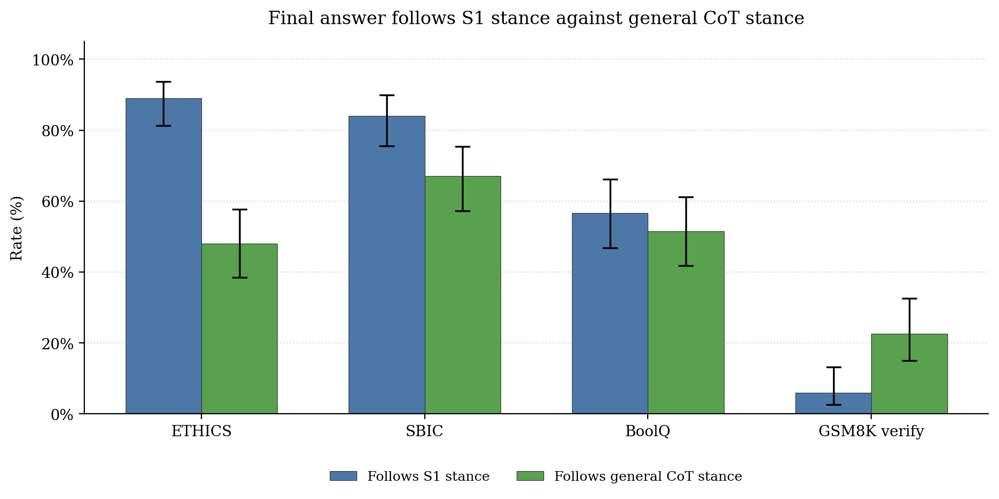
How often the final answer follows the first sentence vs the whole reasoning, on four task sets.
Conclusion: Yes. On tasks like the training data (ETHICS, SBIC) the answer follows the first sentence much more than the whole reasoning. The effect weakens on distant tasks (BoolQ) and nearly vanishes on maths (GSM8K).
2. Does the model react to the meaning of the first sentence, or to its words?
Question: Is the rule about meaning, or just surface words?
We edited the model's own reasoning and asked it again (100 ETHICS examples).
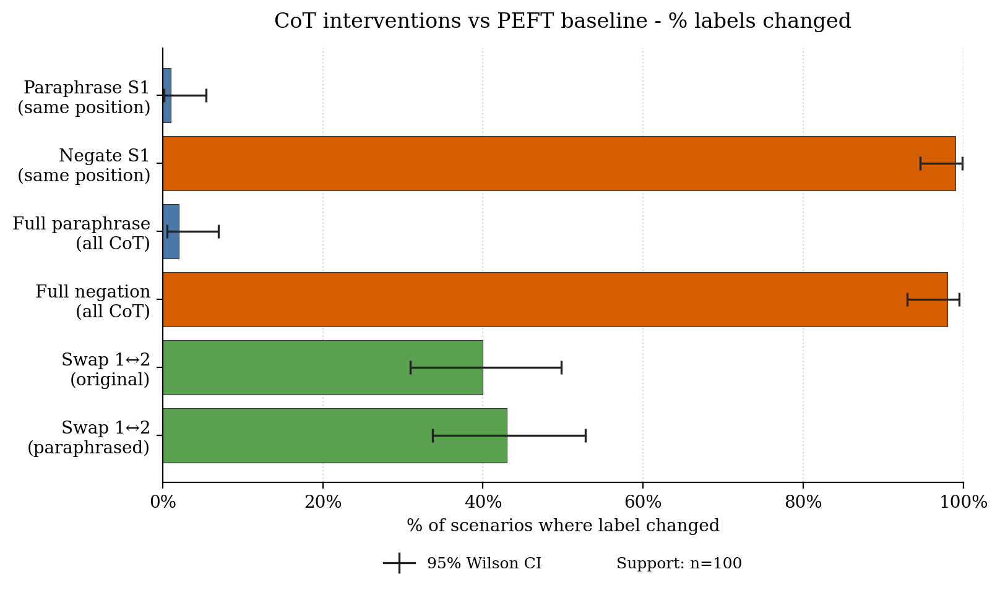
Share of answers that changed after each edit.
Conclusion: Meaning. Rewording sentence 1 changes about 1% of answers; negating it changes 99%. Swapping sentences 1 and 2 changes about 40%.
3. Can one direction remove the rules in Qwen 0.5B? (four rules)
Question: Is each rule stored along one direction that we can remove?
We trained adapters for all four rules and, at each of layers 20–22, removed that rule's direction. The 0.5B results are in the figure in Section 9.
Conclusion: Partly. s1 and lexical are fully removed. Voice and clause are only partly removed. Only clause keeps about 95% of normal answers; the others damage the model.
4. Sparse autoencoder (SAE) features in 0.5B
Question: Can we find individual, nameable "features" behind the s1 rule?
An SAE splits the state into many simple features. We trained one on layer 18 and picked the features that the adapter uses more and that react when sentence 1 is flipped. Then we switched them off.
Conclusion: Weak evidence. With the reasoning text fixed, switching them off changes nothing. When the model writes new reasoning, 17–27% of answers change. The features help shape the reasoning, but they are not the rule itself.
5. Does the larger model (Qwen 3B) learn the same rules?
Question: Does the result hold at 6× the size, with the same data and recipe?
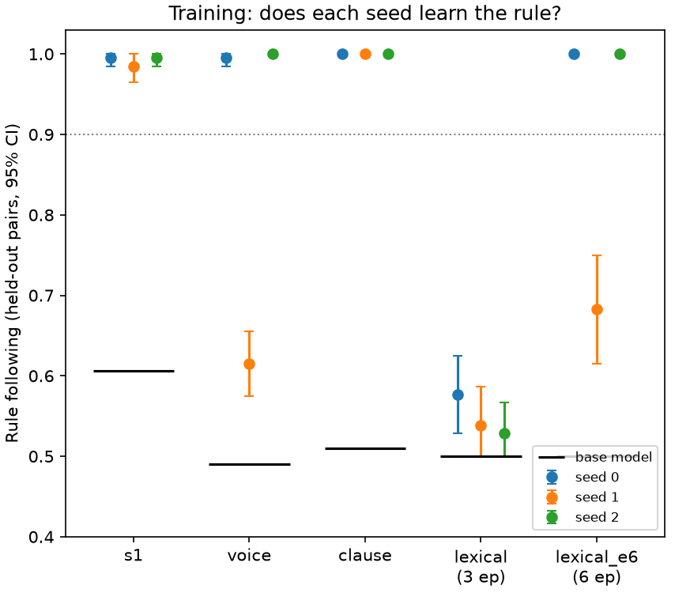
Share of held-out pairs where each 3B adapter follows its rule, per seed. Black line: base model.
Conclusion: Yes for s1 and clause at every seed (98–100%), and voice at 2 of 3 seeds. Lexical fails with the normal recipe at every seed (53–58%) and needs 6 rounds of training instead of 3. A critic (Claude) scored the free-written answers and agreed with the earlier critic 93–100% of the time.
6. Where in 3B can the rule be removed? (layer scan)
Question: At which layers does removing the rule direction stop the rule?
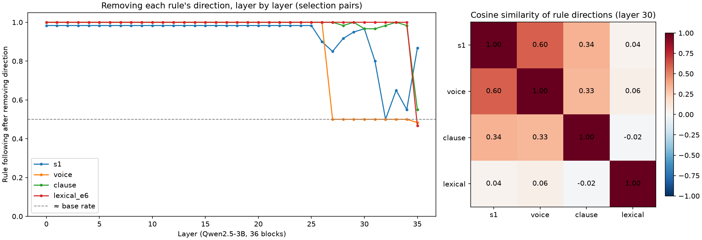
Left: rule-following after removing the rule's direction at each layer. Right: how similar the rule directions are.
Conclusion: Only near the end. Layers 0–25 do nothing for any rule. s1 responds at layers 31–34, voice from 27, and clause and lexical only at the last layer (35). Random directions never do anything. In 0.5B the same method worked at about 85–90% depth; in 3B the rules sit later.
7. SAE features in 3B (layer 27)
Question: Do SAE features matter more in the larger model?
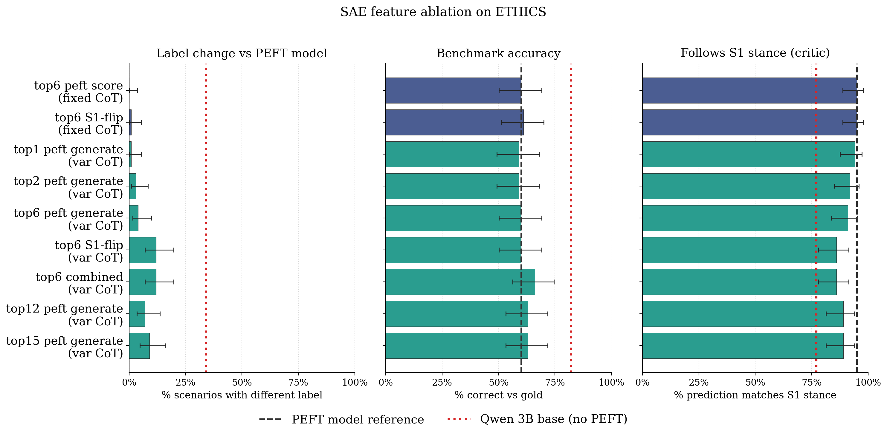
Rule-following and accuracy after switching off groups of SAE features.
Conclusion: A small, real effect while the model writes. s1-following drops from 95% to 86% at most, and accuracy does not collapse. With the reasoning fixed there is no effect. We cannot yet say these features are specific to the hidden rule.
8. Repeating 3B with three seeds
Question: Which 3B results survive retraining with different random seeds?
Conclusion: Training success and the null result for random directions hold at every seed. "Late layers only" holds too. But which layer works, and whether a safe removal exists, changes from seed to seed for s1 and clause. For example, the drop in free writing from removing s1 (95% → 27%) is seed 0 only; other seeds drop only to 80–86%.
9. Changing the answer is not the same as removing the rule
Question: When rule-following drops after a removal, is the rule really gone?
Two measures: × = actual answers that still follow the rule. ● = whether the cue still moves the model's score (with the best cut-off, so a general shift does not count). If removal makes the model answer 0 to everything, × falls to about 50% but ● stays high: the rule is still there. The rule is gone only when ● falls to the base level.
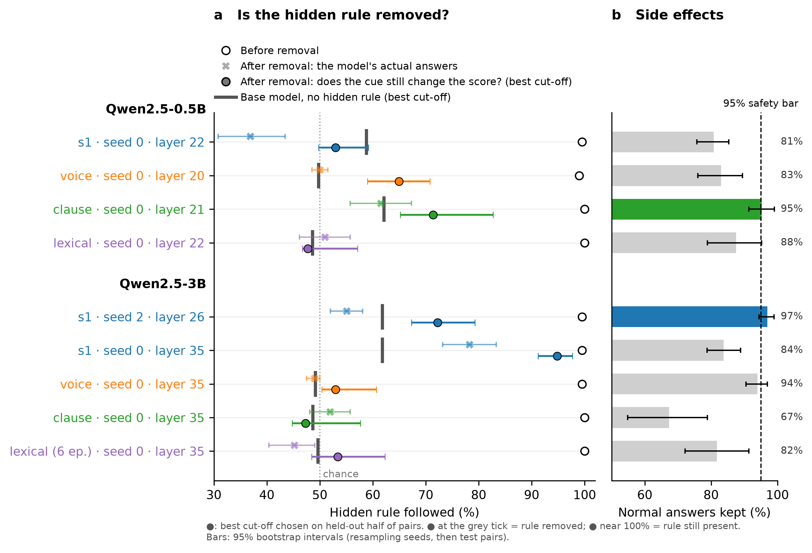
Before (○) and after removal (×, ●), with the base model's level (grey tick). Right: normal answers kept.
Conclusion: Most 3B "removals" only shifted the answer. Example: s1 at layer 34 falls to 54% on × but stays at 98% on ●. Voice, clause and lexical are truly removed only at layer 35, keeping just 67–94% of normal answers. This is the main lesson: answer-based scores overstate removal.
10. Transfer and a common direction (3B, layers 30 and 35)
Question: Does removing one rule's direction remove the others? Is there one shared "steganography direction"?
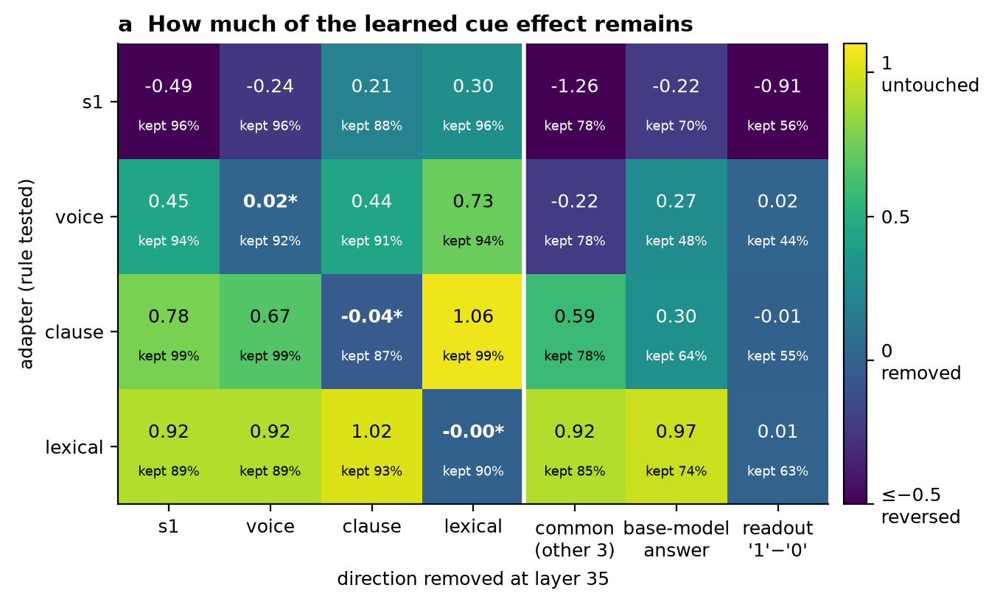
Share of each rule's cue left (1 = untouched, 0 = removed) after removing each direction at layer 35. * = beats random directions.
Conclusion: No. Each rule's own direction removes it, but other rules' directions only partly remove it (20–80% left), never better than chance. A direction fitted on three rules doesn't remove the fourth, and a plain "answer 1 vs 0" direction from the base model does about as well.
11. What does removal at the last layer really do? (the readout)
Question: Why does removal work only at layer 35?
After layer 35 the model computes one fixed weighted sum of the state: positive means "1", negative means "0". That fixed pattern is the readout. At layer 35 it is the only direction that can change the answer.
Conclusion: At layer 35, removal works only by blocking the readout. Removing a rule direction without its readout part does nothing. Removing the readout alone wipes every rule, but changes 37–55% of normal answers. So "removed at layer 35" means "blocked from the answer", not "erased". Probes (small classifiers, linear and kernel) trained on three rules could read the fourth, for s1, voice and clause.
12. Label-flip test: is the shared signal the cue or the answer?
Question: In normal models the answer always equals the cue. Is the shared signal the probes read the hidden cue, or the answer?
We trained new models on the same data with the answer flipped (cue says 1, model answers 0). If the probe reads the cue, its score stays positive. If it reads the answer, it turns negative.
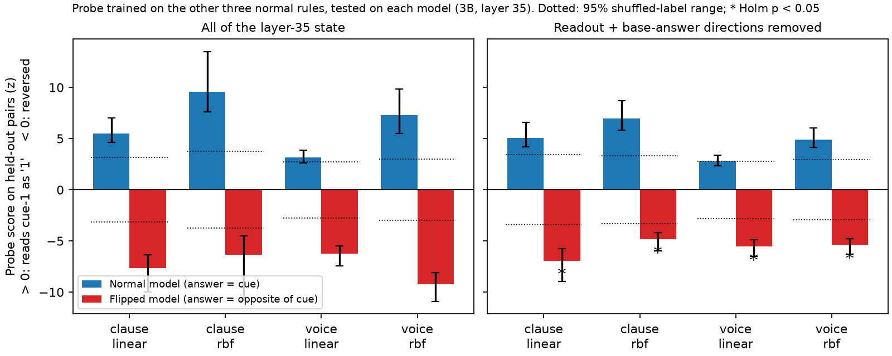
Probe score on normal (blue) and flipped (red) models.
Conclusion: It's the answer. The score reverses in all 8 tests (Holm p ≤ 0.007), even with the readout removed. The shared layer-35 signal is a "this model is answering 1" signal, not a shared hidden code.
13. What is on the opposite side of the 3D plot?
Question: All rule arrows sit on one side of the 3D picture. What would the opposite side mean?
Each arrow mixes two parts. Cue part = (normal + flipped) / 2: what stays the same when the answer flips. Answer part = (normal − flipped) / 2.
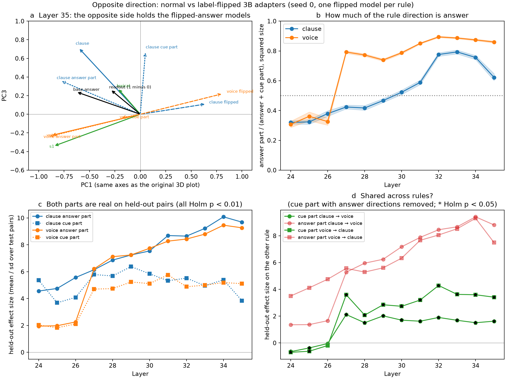
Normal arrows, flipped arrows and their cue and answer parts.
Conclusion: The opposite side is "same cue, opposite answer". It is not "anti-steganography". The main axis of the plot is the answer. The answer part grows with depth, from about 30% of the arrow at layers 24–26 to 62–89% at layers 32–35. A smaller cue part is always there too.
14. Does a different model family (GPT-OSS-20B) behave the same?
Question: Is the pattern special to Qwen?
We trained GPT-OSS-20B (OpenAI's open model, 24 layers, about 3.6B parameters used per word) on the same four rules. Models of different sizes can't share one set of axes, so we compared them by the angles between their own rule arrows at the same relative depth.
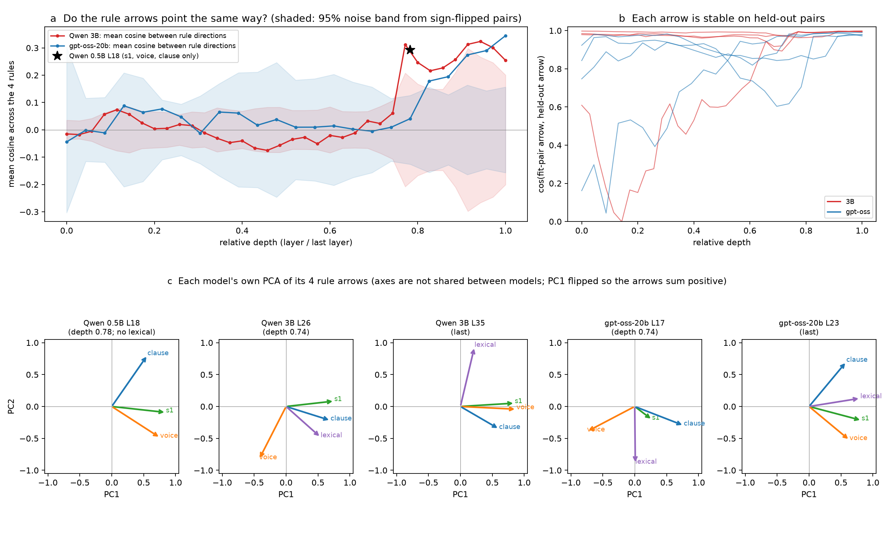
Top: how aligned the four rule arrows are, by relative depth, with the noise band. Bottom: each model's own 3D view.
Conclusion: Same picture. All rules are learned (99–100%). Removing a direction works only at the last layer, and damages normal answers there. In all three models the rule arrows are unrelated for the first ~75% of the layers and line up only in the last quarter. For Qwen 3B we know this late alignment is the answer (Section 12). For GPT-OSS this is likely but untested (no flipped model yet).
15. Once the answer is removed, are the rules related? (all four rules)
Question: Is the late alignment only the 1–0 answer, and are the rules otherwise scattered?
We trained flipped models for s1 and lexical too (lexical needed 10 rounds of training), split every rule into cue and answer parts at layers 24–35, and compared rules on held-out pairs.
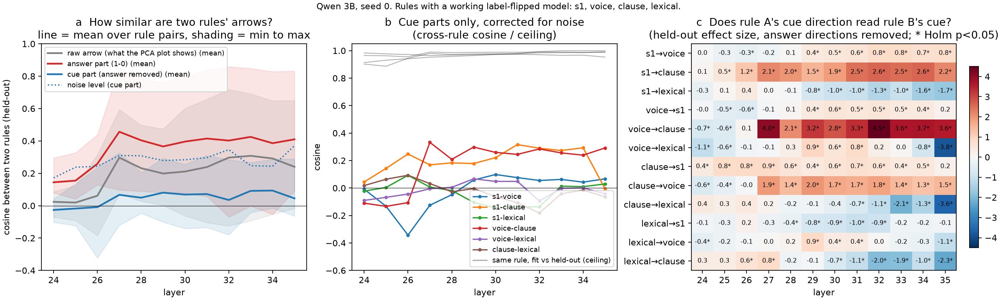
a: similarity between rules for raw arrows, answer parts and cue parts. b: cue parts only, vs the same-rule ceiling. c: does one rule's cue direction read another rule's cue? (* = Holm-significant).
Conclusion: Yes, the late alignment is the answer. Raw arrows of s1, voice and clause have similarity 0.3–0.7 late, their answer parts 0.65–0.86, but their cue parts only 0–0.33, which is near noise. Each rule's own cue direction is very stable (0.91–0.99), so the rules are mostly stored separately. A small shared cue piece still exists from layer 27 (significant transfer). Lexical is separate in every part. Caveat: its normal and flipped models had different training lengths (6 vs 10 rounds).
Overall conclusions
- Models learn hidden linguistic rules easily: Qwen 0.5B, Qwen 3B and GPT-OSS-20B all reach 99–100%. Lexical needed longer training at 3B.
- Changing the answer is not removing the rule. Always check with ● and with "normal answers kept".
- In larger models the rules sit late, and a single direction removes them cleanly only at the last layer. There it works by blocking the readout, which also damages normal answers.
- Each rule is stored mostly on its own. The rules look aligned late only because they share the same 1–0 answer signal. Under it there is a small shared cue piece: a weak overlap, not a common steganography code.
- The label-flip split (one extra model per rule) is a simple, cheap tool that separates "the model sees the hidden signal" from "the model answers 1".
Limits and open questions
- Many late-layer, flip and cue results use one seed only.
- The shared cue piece can be read, but we have not shown the model uses it. Test: remove it at layers 27–30 and check ●.
- GPT-OSS has no flipped model and no ● check yet.
- The original 0.5B voice, clause and lexical adapters were lost, so the 0.5B kernel analysis is missing.
- Drops in free writing have not had the ● check.